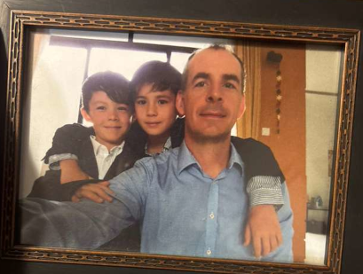

2016-2019: Singapore and Beyond
2016: Goodbye, Cruel Sitecore; Hello, POSSIBLE!
In April of 2016, I turned 43 years old. In August, Ben turned five and we moved him to OES kindergarten. In October, John turned seven, and he started first grade at OES that year.
At some point, I bought John a nice kit of used stage drums off craigslist for about $1,500. For a few years, we keot them upstairs in the loft area outside the master bedroom, but this required that everyone where hearing protection. I don't remember exactly when we moved the drums to the garage. For a while, John had a instructor that was somewhat of a classical drummer, but they didn't seem to like each other much. We tried to keep the lessons going during Covid, which I think was even worse. Eventually, we found more of a rock and roll instructor, but that didn't last long - it's hard to get John to do anything that he doesn't want to do, including drum practice (though drumming seems to be one of his favorite activities). His drumming really took off when we stopped using instructors and he figured out how to play along to songs using his phone.
Sitecore in general was very good to me, especially Bjarne, but he seemed to lose control after the external investment. In any case, I was glad to be done with the company, though I missed some elements of the developer community that I had helped to build.
I thought that I would be happy to be retired, but actually it was somewhat boring. I lack discipline and intersts, so I did't get much done and didn't enjoy myself. Everyone else in my proximity, including Susan, still worked fulltime, so nobody was availble for doing things. At the time I didn't recognize the advantages of having so much free time to myself, for example the opportunity to write a book like this. Maybe I was too lazy and just full of excuses.
Several times, my property smelled horrible, especially the interior of the garage, as if someone had burned styropham or something. I tracked it down to a neighbor's shed, which was apparently used to burn plastics and other waste, but just typical household garbage. I believe that the tree branches near the shed's smoke stack showed signs of toxic poisoning.
Once, I saw a woman that seemed to be tending the fire. I called out to her, explaining the situation and that I had children on the property and asking her to stop. As this had been going on for some time, I might have been somewhat rude about it.
Shortly afterwards, her man came accross the property line where there was a gap in the laurel that had clearly always been used as an intermediary pathway between the lots. I was out near the hot tub at the time. He approached me with great anger, as if he wanted a physical altercation for yelling at his wife. I calmly explained the situation and repeated my request that they stop burning waste.
He was angry at my calmness and repeated request, but he left the way he had come. Shortly afterwards, he stacked brush to block the opening between the properties.
Eventually, they performed another burn in the shed. I called the sherriff's department and they apparently sent the fire department to evaluate, as Portland or the county or the state was concerned about air quality issues at the time. The owner was required to disable the burning apararus in the shed, which the fire department eventually confirmed.
I really don't know what I did for the first few months of the year. I assume that I mostly hung around the house, smoked weed, used the hot tub, went to restaurants and out for beer, and other wastes of time, but I probably did some things like organize the garage and a little landscaping.
Shortly before this, I had met a guy named Adam that worked for one of Sitecore's business partners, an advertising agency named POSSIBLE. Adam lived in Seattle but I had gone out to dinner and drinks in Portland with him and a few other people. He had seemed to take a liking to me for some reason, but I am generally warry around people I don't know, especially people that work in marketing.
Around April of 2016, Adam contacted me and offered a contracting opportunity for ConEd, a major electric utility in New York City. I felt completely unqualified, but the compensation was good, I was bored, and I always like to visit New York. I had a business trip or two, including at least one where I worked with Adam in New York.
Adam seemed to think that my name and prior role at Sitecore could be very valuable for POSSIBLE, which sold or worked on Sitecore projects for numerous customers. I remember a trip to visit Honda in Southern California, where I met a guy (Andrew?) that ran the POSSIBLE office there. I don't remember how we got on the topic, but for whatever reason, he encouraged me to visit Luang Prabang in Laos, the entire city of which is a UNESCO World Heritage site. I think I might have been influential in landing the Honda deal for POSSIBLE LA, but I never worked on that project.
I think it was in the summer of 2016 that we dug a new sewer line for the house. The foundation had two parts: a crawlspace on the uphill side and a daylight basement on the downhill side. The basement had been mostly finished, with windows and a door in both an office and a bedroom. Whoever did this work had apparently created a bathroom on the crawlspace side of the bedroom. There had not been any need for a sewer when the house was built so the sewer line left the house from the crawlspace, which was above the toilet. There was a sewage pump from the basement bahtroom up to the sewer line. Having experienced multiple floods - including one in this very house during the winter of 2015/2016 - I didn't trust the sewage pump.
Adding a sewer line was a really big deal. After some flooding at the house on the East side of Portland that we had owned previously, I had had a contractor install a drainage system that worked really well. This contractor was supposedly an expert in excavation projects, so I contracted with them for this sewage project.
The new sewer line needed to go under the back driveway, which meant that I had to get permission from the condominiums to the East of the house that owned that land. At that time, I mentioned to them that I was interested in buying the land. They should have taken the offer because I've since realized that the easement is better - I have access without liability for land on which I don't have to pay property taxes. Some years later, they contacted me asking if I was still interested in that purchase, but I declined.
The nearest manhole was about 300 yards down hill from the house with barely enough slope to meet code requirements. This required a significant amount of trenching, and it was certainly expensive, as the property contours required digging almost ten feet deep in some areas. To make it more worthwhile, I had the excavator run water and sewer lines up to the garage with the intention of creating an Accessory Dwelling Unit (ADU) there, which would function as a standalone studio. Adding a fourth bathroom required a four-inch sewer line where leaving the house with three bathrooms would have required only a three-inch line.
At the time, I was having the entire house replumbed. I liked my experienced plumber Mike so much that I gave him a bottle of champagne for Christmas that year. Various previous owners of the house had taken numerous shortcuts, such as using PVC for plumbing lines rather than reliable products. In fact, the entire water line for the house is still PVC, which is scary because it's a couple of hundred yards long, the water pressure is very high, and the property freezes in winter. I should have addressed this before I paved over the dirt driveway under which this line is burried, but I don't care to rip up that asphault now. When this line fails, it will cause a flood on the property, but hopefully the house will be safe.
I was barely involved with the sewage project, trusting the crew completely. I took some photos or videos from the master bathroom but otherwise didn't really pay attention. I watched some moments when the excavator installed shoring in the trench in my front yard. The shoring consisted of very worn pieces of plywood along each side of the trench. I didn't realize it at the time, but shoring helps to prevent the trench from collapsing.
Late in the morning, I went out to check on the progress. There was no caution tape and I don't remember even any construction cones around the trench. Right in front of the guy operating the excavator, while he was still working, I jumped over wearing flip flops. Moments later, as I was watching the excavator in front of me rather than looking at the trench behind me, everyone started screaming and calling all of the team members towards the trench. A section that had not been shored had collapsed, apparently just as one of the workers had broken the rules by stepping outside of the shored section.
Everyone started digging frantically, but it was obviously hopeless. If the man hadn't been crushed to death, he had certainly had the air forced out of his lungs by the weight of the soil and sufficated almost immediately. The crew seemed to hold out some hope for a few minutes. I walked over to the plumber, who was working outdoors at the time. We both already knew that there was no hope of life. I think that's the closest I've ever been to a human dying. It easily could have been me. It was certainly a traumatic day for me.
It seemed like about sixty emergency workers from various departments came to my property that day. A news crew also came with a camera, which upset me enough that I yelled at them to get off my property, which they honestly seemed to think was amusing. Some people are just terrible.
Most of the emergency workers stood around watching as contractors for the city dug and installed metal shoring. Someone that was probably with something like the government's Occupational Safety and Health Administration (OSHA) interviewed me for a few minutes. I wasn't able to answer questions such as whether the team had had a safety briefing that day, but it was pretty obvious that the contractor would be liable.
The emergency digging took several hours. I eventually watched them remove the body in a red body bag. After everyone had left, I found the worker's backpack. Other than the metal shoring, which the city left behind for several months, this was about the only sign that anyone had been there recently. I found a pipe and marijuana in this bag, which I eventually returned to the excavation company. Someone had actually introduced me to this worker that morning, but I didn't know him at all.
A few months later, I was able to get the excavation company to finish the project. It's possible that some other excavation companies volunteered to do some of the work. Later, I got a huge water bill because one of them had broken an irrigation water line without realizing it. I never saw any water, so it must have channeled underground. I think the city didn't require that I pay for the water usage, and the excavation company repaired that line as well.
There were several OSHA violations, such as there not being a ladder in the trench for worker eggress, I assume insufficient shoring, and I think other things like excavating while workers were nearby in a trench, but the biggest issue was that the worker had stepped outside the shoring. I have no idea whether he had gotten high that morning.
Before Mike finished the plumbing project, he mentioned to me that his wife was something like a Native American shaman and offered that she could come and clean the property. I don't believe in ghosts, but I think the previous owner had lost his wife while he lived there and I didn't see what damage this could do.
When she came, I think she walked around the property with some burning sage or something. She reported that the house was clear of spirits, but that she had been drawn directly to the place where the neighbor had piled brush between his property and mine, as if that were a place that needed cleansing. I had never told her or Mike about that incident.
Towards the end of that summer, Adam offered me a role as Senior Vice President for Experience Platforms. After ConEd, my main client was Resorts World Sentosa (RWS). I started making month-long trips to Singapore about every second month. Sitecore and POSSIBLE had drastically oversold RWS on the capabilities of the product and what the agency could deliver, so both the project and the account were in rescue mode before I arrived.
By this time, the POSSIBLE sales person (Joe?) that had written up the deal had left the company. Not only that, but Sitecore was a small part of the project, which involved various complex technical integrations that really had little to do with Sitecore and even less to do with marketing. POSSIBLE didn't have the technical resources to deliver these capabilities and had outsourced that work to a Polish systems integrator. Their work rates might have been lower than those of Singaporeans with comparable skills, but there travel costs must have been high.
I once made the mistake of arranging to give a presentaiton where I tried to encourage RWS to use the SCORE product from my friend Brian's company, BrainJocks. The woman that managed the project for the customer, who I later refferred to as the dragon lady, humored me with an hour, but it was far too late in the implementation to consider using an accelerator and they certainly weren't going to spend more money on software related to Sitecore.
My direct manager in Singapore was an American guy named Mike that had come from POSSIBLE Seattle (or whatever company it had been before POSSIBLE bought it). He was great. We discussed things like ADHD, which I feared my son John had. He said that the drugs had really helped him.
The main Pole on the project was Jacob. We started going out to meals and for drinks at night. Sometimes Rhameel would join us.
Rhameel MVP Orchard Towers night, questioned Singapore, called Susan
One one of my trips to Singapore, after flying in, my right shoulder basically locked up. It had been giving me problems for some time, I think from long-term wear and maybe a few injuries, but at this point I could barely use that arm, which is important because I worked at a computer all day. I went to Singapore General Hospital and had an ultrasound that diagnosed the problem as calcification of a tendon, but I've since had other doctors tell me that there are various problems. The entire side of my body is messed up, especially now as I write this in 2025 after a motorbike accident where I broke two toes in that foot.
Afterwards, I sent the invoice to Kaiser, where Susan works. Since they don't have a hospital in Singapore, they should have paid this bill, but they absolutely gave me the runaround. I don't like American health insurance and I have particular issues with Kaiser, which seems to be a huge bureacracy enriching itself rather than a healthcare provider.
I went to Chinese medical office in Chinatown. Amazingly, the doctor gave a vigorous massage that seemed to fix the problem for a couple of weeks. It always returns, especially when I sit in an airline seat that prevents me from keeping my arms down by my side, when I have to drag suitcaces through airports, if I type too long, and so forth. This is e reason that I go to massage, but I should really exercise and do physical therapy. I have a bad habit of not caring for myself well.
One thing I like about Asia is that massage is inexpensive. I had free time, so I went for massage at a place that I thought looked relatively reputable - they marketed spa and beauty services more than massage. A girl that I think had come from China gave me a massage and then I accepted the happy ending, which I think cost ten Singapore dollars at the time.
Being someone that is against prostitution and exploitation in general, I was somewhat surprised that I did this. Susan had denied me sexual pleasure, or used to control me so many times that I probably felt less guilty than I would have in a healthier relationship. In fact, I'm quite certain that I wouldn't have done anything like this if I had been happy with Susan.
I returned for the same service once or twice. We used google translate on phones to communicate a bit and I once saw what she started to type translate to "I love you", but she quickly erased that. I decided to try other massage shops, but didn't do this very often, and not all of them offer the happy ending.
This was the start of a realization that I am still trying to accept: not all sex work is about men taking advantage of women. In fact, to some extent, one can see much of it as women taking advantage of men's sexual needs, which are often unfulfilled by their sexual partners. While it is not fair, it is true that women in these situations have no education, no skills, and basically no opportunity. No man is going to give them money for nothing, and many basically push these services to increase their income. I have turned it down enough times to know that they can get upset or even refuse massage service when they learn that the man does not want the happy ending.
Eventually, Adam and I worked out a plan for me to relocate to Singapore.
Then, one night, I went out with several guys from work to a pub in Little India that has since closed, but had live music and draft beer that night. This was actually one of my preferred places in Singapore. Not just at this location, we drank for several hours. I think it was about 1:00 or 2:00 in the morning when someone suggested that we go to Orchard Towers. A the time, I had never heard of this place.
As soon as we approached Orchard, I had a very bad feeling. I quickly realized that it was basically a place where men could buy women for sex. I immediately walked out and got in a taxi back to my AirB&B apartment in Chinatown, leaving the other guys to do whatever they wanted. It has since been shut down, meaning the activity has almost certainly moved elsewhere, but I later learned that Orchard Towers was then known as "four floors of whores", where the higher one goes, the greater the deviance one would find.
From the apartment, I called Susan, very distraught, probably still somewhat drunk. I explained what had happened and that I didn't think that we should move to Singapore because of what I considered to be deragatory treatment of women. She didn't have much of a rection. I think by this time, she really wanted to come to Singapore. She basically said that this kind of thing is everywhere. I was somewhat shocked, but then again, she did grow up in relative poverty in China.
At the end of 2016, I returned the leased Ford, we rented our house out to the family of a woman that had been one of John's pre-kindergarten teachers at OES, and then my boys, their mother, and I relocated to Singapore. Between us, we managed to transport everything that we needed in 13 pieces of luggage. I later brought John's electronic drum kit, which was certainly a hassle to transport. He had no drum teacher in Singapore and I don't think he ever used it. I eventually got it back to the USA, but never assembled it.
I think that Rolf and Karen were divorced by the time that Susan and I went to Singapore. Supposedly, Rolf had cheated on her with his best friend's wife, which had really messed up all of their relationships.
2017
We started out in a short-term condo rental at DLeedon, which is near the Farrer Road MRT (metro) station, which I don't think is very close to much of interest anything . This facility has great pools, lots of children, and plenty of smooth concrete for riding unpowered things with wheels. We immediately acquired two-wheeled Razor scooters for the boys. There is also a decent hawker's market (food stalls) nearby, with a playground.
About a month later, we rented a three-bedroom condo in Orchard at The Patterson at 63 Patterson road. At the time, the International School of Singapore (ISS) was just around the corner from this facilty, which also had a swimming pool and a tennis court. John entered a soccer program on weekends and both boys took tennis lessons from an instructor that I believe was Indian.
John started to take fencing lessons but the other boys were so rude that, after Susan moved out at the end of the year, I complained to the instructor and stopped taking him to class. Well, that might also have been partly because he never wanted to go, and it was boring for Ben and me to sit through his lessons, but honestly, the other boys were so cruel that I saw John close to tears, which I have only seen when his mother made him basically catatonic from emotional abuse or later when his girlfriend broke up with him.
In some ways, working in Singapore was great, partly because I didn't follow the standards of dressing up or working long hours. I mainly wore T-shirts, shorts, and flip-flops to work, which was somehow accepted due to my status. I was earning a decent salary in US dollars working for the POSSIBLE advertising company, which was one of the WPP agencies at the time.
My office was on the 13th floor at Harbourfront Centre, which is right on the coast overlooking Sentosa Island (which I understand was man-made) and above the ferry terminal. There were windows near three sides of my desk, although Sentosa was behind me. In the morning, I could see the sunrise to my right over a shipping port, and in the evening I could see the sunset to my left, with the Singapore Cable Car system ferrying passengers through the air to and from the island. Outside the office, there was also a large patio that included a helipad. This was a great area for social activities, which we had weekly, though sometimes indoors due to the heat or rain.
My direct manager, Mike, was pleasant, interesting, and entertaining. He and his wife Tina invited us to their appartment complex, where the boys enjoyed the larger pool. Mike and I discussed his ADHD and its treatment. I was concerned that John and I both had relevent. He thought that the meds had really helped him as a teenager. After we got back to the USA, a counselor offered that we could get an ADHD diagnosis for John and start experimenting with the the drugs, but I never supported this and it never happened. Except in very serious cases, I think it's generally better to just let people be themselves, and I think the problem was really that his mother and I weren't happy with some aspects of who he was. Our parenting was terrible, and certainly part of his development of what I would classify as Oppositional Defiant Disorder (ODD), possibly underpinned by varying levels of ADHD, depending on activity and environment. Basically, I think some boys just have too much energy and need to be outdoors and with men as role models, not cramped in classrooms led primarily by female teachers.
In other ways, this job was a nightmare. I was finally responsible for a Sitecore project, and the customer (Resorts World Sentosa, which has hotels and entertainment facilities on Sentosa island) been drastically oversold, both on what the software could provide and what the agency could do with it. The project was already underwater, meaning that the agency had lost money, and we still had to deliver. Since POSSIBLE didn't have the technical skills, it subcontracted the technical work to an outfit in Poland. I enjoyed going out to meals and for drinks with the Polish guys, although they eventually parted ways with some negativity. If I ever get to Poland, I'll look try to lool up least Jacob and Thomas.
I also worked directly with a couple of Philipino guys, Rhameel and Marvin. I think they had both been Sitecore MVPs, but I think only Marvin deserved the title. Rhameel was a smoker, which bothered me. During the project, he seemed to never be working, always out of the office. While I was there, he quit and went to work for Sitecore, which could explain those absences. Marvin also eventually worked for Sitecore.
In addition to the facilities, I really respected the culture that Paul had created for POSSIBLE Singapore. Unfortunately, I think the RWS project killed POSSIBLE financially. Paul was not responsible for that sale; I think a salesperson named Joe had taken a significant commission and disappeared. For Lunar New Year, the office had lion dancers visit, and I was able to bring my boys for that event. I think they were 6 and 8 years old at the time, so this was pretty exciting for them, and also a good experience for me and Susan.
Mike and his wife Tina occasionall invited my family to visit their apartment, which had great pools. Tina would also make American food, including a great chicken salad. These were really good times for my family.
A guy named Malcolm joined us as something like a technical project manager. At first, I didn't trust him and some direction that he was defining for the project, but later, I realized that it was probably for the best. He had much more business experience in Asia than I ever will. We have a lot in common including interests in Asia, philosophy, technology, and a lack of interest in meeting certain societal expectations. have stayed in touch over the years and have great conversations. He had a daughter with a woman in China that he never married. In that context, he taught me the expression "white ATM".
During 2017, I definitely felt like I was cheating on Susan. I could mentally justify this by thinking that she owed me something for choosing not to work in Singapore, doing so much damage to my life over the years, and generlaly not meeting my sexual needs or desires for more than fifteen years. In truth our relationship was going relatively well and we were having sex often enough. I think I was just excessively horny at the time.
I would occasionally go to massage parlors. If they offered the happy ending, I would accept it. Almost all of these women were Chinese except for maybe one that was Indian. Their ages ranged significantly. Eventually, I met a Thai masseuse named Irene who worked in China Town. She gave good massages and I think she actually blew me at the massage shop. I stopped seeing other people for massage.
Something about living in Singapore and the things that happend to me there seemed to justify all of this for me, something like the boiled frog metaphor.
At some point in 2017, I had another trip around the world. I don't remember the details, but I went from Singapore to America to London and then the rest of the way around to Singapore.
In the summer of 2017, I had a business trip to the United States. I had to go to New York for ConEd and then to Seattle to do some kind of fireside chat presentation with Adam at the POSSIBLE headquarters there.
International travel is hard on me, especially as I get older. I can't sleep on planes, I often have trouble sleeping in hotels, and it takes a while for my body to adjust to time zone changes. This is probably all compounded by the fact that I tend to drink, especially when I travel and maybe even more so on business trips.
So, I was already tired when I arrived in New York. and then basically exhausted by the time I left Seattle. I had decided to drive from Seattle to Portland, which takes about three hours, and then I would fly back to Singapore from there.
I rented a small sedan, drove down to Portland, and smoked some weed during the day. Then I met up with my friend Steve at a bar, where we had dinner. I don't think I drank that much, but we smoked some weed concentrate product almost immediately before I got in the car to drive to my hotel.
Almost as soon as I pulled out of the parking lot, I got pulled over. The cop said I had not come to a complete stop before exiting the parking lot and that I didn't have my blinker on, which are really minor infractions that don't generally garner police attention. I might have been driving suspiciously, but it seems likely that the Beaverton police keep an eye on cars coming from that bar.
The stop seemed pretty routine at first, as I really wasn't drunk. I was a white guy wearing a hand-tailored formal shirt driving a relatively new car, which is not a typical target for cops, but he was a rookie. When he asked, I explained that I had had maybe two or three ciders with a meal over about three hours, which I thought would build trust without putting me at additional risk. When he asked whether I had smoked any weed, I made the mistake of admitting that I had. I don't like to be dishonest, and I'm not very good at it, so I thought that lying would make things worse. I said that I had smoked weed much earlier that day, which was a sort of half-truth: I had smoked weed that day, so the chemicals were certainly still in my system, but that high had worn off and shouldn't have counted towards a DUI. I didn’t tell him about the more recent concentrate product.
He seemed like he wasn't sure what to do, so he called a more senior officer. That car came quickly and the second cop walked me through the test routine. I never got to see video of that, but I'm relatively certain that I passed. When it was over, I asked, and the cop seemed to agree, but started handcuffing me anyway. He explained that this was because I had admitted to smoking weed that day, which made the alcohol tests seem rather ridiculous. By this time, Oregon had legalized weed. If the cops arrested everyone in Portland that smoked weed on a given day, the city would basically grind to a halt.
I had never been in handcuffs before. They were surprisingly not very uncomfortable and I don't remember being afraid or feeling trapped or claustrophobic in the back of the police car - I mostly just wanted to sleep.
They put me in a small holding cell at the Beaverton police station. I think we did some paperwork and I was left alone for a quite some time. I tried to sleep on the plank, but I couldn't. I also tried to breathe as deeply as possible, as I had heard that alcohol metabolizes through the lungs.
It seemed like a few hours before they gave me the breathalyzer. Maybe they didn't care that this would give the alcohol time to dissipate because they were charging me for weed anyway. Just before taking that test, I expelled as much air from my lungs as I could and took a very deep breath, trying to get as much clean air as possible. I think it read .02, which is significantly below the .08% legal limit in Oregon.
At this point, I think the cops realized that something might be wrong. Weed had gone legal in 2014 and maybe they didn't have enough experience with pure marijuana DUIs. If I understand correctly, the field sobriety test determines guilt or innocence, and I don't think they had evidence that I had failed the field sobriety test. In other words, there was the potential for a false arrest lawsuit, which would be compounded by the fact that they had towed my rental car to impound.
They called a field sobriety testingAbout a month later, we rented a three-bedroom condo in Orchard at The Patterson at 63 Patterson road. At the time, the International School of Singapore (ISS) was just around the corner from this facilty, which also had a swimming pool and a tennis court. John entered a soccer program on weekends and both boys took tennis lessons from an instructor that I believe was Indian. expert to evaluate me. This young guy, who was not a cop, came and asked me some questions. I clearly wasn't drunk or stoned.
After our conversation, he walked over to a group off people that had been talking at a table that was not visible to me. They all went quiet. I specifically remember the young guy saying to them, "I could go either way on this one." The voices of the copes were then clearly intentionally quiet or muffled, but they decided which way to go.
They took me to a vehicle that appeared to be some sort of van with benches running down the interior sides. There were a few teenager boys or possibly very young men. We started talking and they were very welcoming and friendly. They seemed to be in a habit of getting arrested, likely for things like vagrancy and petty theft to support their heroin addictions. We all had our hands handcuffed behind us, but otherwise we were lose in the vehicle. Apparently seatbelts are not required for passenger vehicles operated by the police. I was starting to see some flaws in the system.
It was very clear that didn't fit with this group. Assuming we would be together for some time and that I didn't want to be on anyone's bad side in that environment, I started trying to make friends anyway, talking about what had happened to me.
Then the cops brought a middle-aged man to join us. He immediately got into a conflict about nothing with one of the kids. Neither was about to stand down. As none of us could use our hands and the ceiling was too low for kicks, the man rushed at the boy and started trying to head butt him. The cops intervened and moved him to a private vehicle. Somehow I later learned that he had been arrested for domestic violence.
Then we were on our way to the Washington County Jail, which is managed by sheriffs rather than city cops. We all went into a holding area, which was actually somewhat comfortable relative to the holding cell and the van. The counter service started processing people one or two at a time. The following iamge that I took from their website looks a lot like the area where I waited and the counter where they processed people.
While I had been on the east coast, I must have met up with some family members or somehow otherwise picked up two one-once bars of gold that I had inherited from my mother's mother. By the time it was my turn for processing, I realized that these small bars were on the floor of the rental car, so I informed the officer. Luckily (or more likely, intentionally), they had processed me last, so there was nobody in the room to potentially overhear me talking about this. I wouldn’t have wanted to spend time in jail with a bunch of criminals that might think they could extort commissary from me, but I guess my clothes would have given away that fact regardless.
Where everyone else had been moved past the counter and into the jail, I remained in the holding area. I felt like I was getting special service for some reason. I was able to make numerous phone calls. I tried to call Steve, but he didn't answer. I also called Judah, who also didn't answer. This might have been around 4:00 in the morning. I started leaving messages for DUI lawyers listed in the phone book.
I don't think I was able to sleep at all. Eventually, the sheriffs notified me that someone had arrived to collect me. Amazingly, Judah had seen the missed call on his phone and determined exactly who needed his assistance. He and his girlfriend arrived in her car and they took me to my hotel. I think I cried a little when they picked me up.
I think I was able to make my scheduled flight to Singapore, but I had to return to Portland at least once for court and to take some stupid class about drugs and alcohol. I started to realize that this was somehting of an industry - the cops were making money, the teachers were making money, the tow truck drivers were making money, the lawyers were making money, the judge was making money, and there was a whole admininstration making money around each of these entities, all to get a sober but tired person not to go back to their hotel to sleep.
I gave my lawyer $10,000. He did almost no work and suggested that I plead guilty.
When I eventually saw the police report, it said that there had been a strong smell of alcohol on me. I feel like this was dishonesty by the cops, maybe a standard phrase or even something cut and paste from another arrest report for their convenience. I had not had much to drink, and I had eaten a meal and smoked something right before getting in the car. It's possible that the smell of the bar lingered on me, but I don't think that I or my breath actually smelled of alcohol.
The judge assigned me to Diversion, which is a program that kept the arrest off my record. I assume that I didn't have insurance at the time and got a new policy when I eventually returned to the USA, and I'm not sure whether that new insurance company ever knew about about my DUI.
One aspect of the Diversion program was that I was supposed to not drink alcohol for a year. This was actually really easy, partly because beer in Singapore is so expensive. I had to attend twelve alcohol counseling sessions that included some random alcohol and drug screening tests. I found a counselor in Singapore that I liked. He immediately understood that I didn't have a drug or alcohol problem; we spent most of our sessions talking about my issues with Susan. Being a Singaporean Chinese guy, he was very familiar with people like Susan. I remember that in one of his reports he described her as "mechanistic". I probably ended up having beer again within that year, after the sessions and testing ended.
Towards the end of 2017, it was clear that POSSIBLE Singapore was going to fold. The company gave up the facility at Harbourfront and its people into another agency with a headquarters at a different location that was much less interesting for me. By this time I had probably already started working part-time mostly from the condo.
I wanted to stay in Singapore, but Susan wanted to go back to Kaiser, which would re-instate her at the same level of seniority, salary, and benefits if she returned within two years. I think she left Singapore in November, but I stayed with the boys for about eight more months.
Before Susan left, we looked into hiring a domestic assistant to help me around the house, because I honestly don't know anything about cooking. Many households in Singapore have a domestic, and it's generlaly assumed that any expatriate will have one. We actually tried someone, but it didn't work out.
On her flight out, Susan met a Filipina on her flight who was going back to see her children for the first time in years. Susan said she gave the woman $100USD or something. I don't know how to feel about things like this - the woman would have had less opportunity to provide for her children if she had stayed in the Philippines, but she should have had more opportunities to visit them. As I said, there are very few good opportunities for uneducated, unskilled women in Southeast Asia.
As soon as Susan left, she seemed to completely disappear. Though she almost certainly wasn't, I had a strong suspicion that she was cheating on me with a Chinese American guy in San Francisco that worked at her company.
I had Irene come to the condo and we started having sex regularly.
The boys and I went to the USA for Christmas, where we stayed in an AirB&B. Before then, we went to a Christmas party at some kind of club for Americans. The following photo shows us dressed up for that.

While we were in Singapore, someone from the Home Owner's Association contacted me to explain that a tree had fallen on one of their carports, damaging the structure and at least one vehicle. I think that I would not have been liable, as this would be considered an act of God unless they could prove that they had informed me about a dangerous tree on my property. In any case, it turned out that this tree was on their side of the property line.
2018
While the boys and I were living in Singapore, we visited many places. After Susan left, she would come back for approximately a week every month and we would go on vacations together or she would take the boys. I don't remember exact details, but we went to at least Thailand, Bali, Australia, New Zealand. After Susan left, we went to at least Thailand, New Zealand, and Sri Lanka.
At the beginning of 2018, I was in Singapore, alone with the boys. This was a great time in our lives and may have been our best time together, as we had no expectations from their mother and she had no control over our activities. We could focus on doing whatever we wanted to do, which could be as trivial as hanging out in the condo, not doing much.
I never learned to cook and wasn't very good at cooking. I would typically make the boys walk to the grocery store with me - which was quite some distance, especially in the Singapore sun - partly because I didn't want to leave them at home alone amd partly so that they could develop a greater sense of responsibility for food choices. One thing we cooked often was pasta; another was what Susan called "John's favorite meal", referring to my son. This consisted of things like potatoes, sausage, onion, and maybe bell pepper and spices and such, chopped up and cooked in a pan.
Of course we spent some time in the malls of Singapore, which are basically unavoidable. We also went to some movies together. We occasionally visited East Coast Park, especially to rent and ride bicycles. We had a great time in one area that was laid out like a small city for children to ride around.
//TODO: link to biking video
Less occasionally we went to Sentosa Island. Our most frequent restaurant destination was a Baja Fresh, which was extremely salty, but we all missed Mexican food.
We also went to at least Sri Lanka, where our safari truck broke down and John also got very sick. While we were there, I managed to meet with someone from the Sitecore community, who drove several hours with a friend to see me. The boys and I also went to Thailand together at least once. We also went to Australia.
alone with the boys - Sri Lanka, Thailand, riding bikes, grocery shopping Luang Prabang girl, tuk tuk drivers Bhutan and Laos - temple told me to wait, poem, kham chiang mai, condoms, Kham's appartment, trip to temple with friend, laos house public school, catholic school, oes sleeping in the basement
meeting Belle, health supplements
Tried to stay in Singapore or Thailand - evne if Susan's mother had to come COnsidered san diego or san ramon Irene, first sex in November?
Irene would sometimes come to the house to give me massages, but we would also have sex after the children went to sleep. Sometimes she would give them short massages as well. Irene and I would sometimes meet for a meal during the day, and she would very occasionally bring prepared food for the children and me, but otherwise I was responsible for food planning and preparation.
One day, Irene arranged for her sister Belle to come with her. Belle had some kind of nerve condition in her face, but she was beautiful, with a great body and hair. I was instantly attracted to to her, and Irene obviously both expected and recognized this. At some point, Irene tried to warn me about Belle, but I didn't understand it. At the very least, I could tell that Bell was somewhat pushy.
Belle wanted to sell me health supplements, but at some point our feet touched and I could tell that there was some other potential, although Belle was married. After our first meeting, as I walked her to the bus station near my condo, we started having a conversation. She seemed to recognize that I wanted to be a good person and asked questions such as whether I was a Christian. She seemed surprised when I said that I was more interested in Buddhism. It was clear that I could relate to her about things that neither Irene nor Susan never even discussed with me.
She came to the condo other times, doing things like taking my weight and measuring my arms. One time, she explained that her husband was waiting for her.
Partially because I was so much happier when she was not there, because she seemed so unhappy to see me when she visited, because she ignored my dreams by planning to move the family back to the USA, and because I had realized that I could love another woman, by this time I knew that my relationship with Susan was over.
After the school year ended, before mid-June of 2018, the boys returned from Singapore to the USA. At one point I had had a goal of visiting every communist country, and I like to see how Bubdhism varies in different cultures. Susan, who always did our travel planning, arranged guides for me for about a week in Bhutan, but I was just going to explore Laos alone the following week. Along with a prior recommendation from Andrew of POSSIBLE LA, Laos's relatively new opening to tourists was particularly appealing, as I thought I would see cultures less influenced by globalism and Westernization.
Before leaving Singapore, I vaguely planned with Irene to meet in Chiang Mai at some point. Chiang Mai is the large city nearest to village where she grew up. At some point I must have known that I didn't want to pursue a relationship with Irene, and was also suspicious that she was married. I felt that we were more playing a friendly game than planning anything significant. I think before I left Singapore, I had given her something like $25,000, which she needed to help one of her children through college. This was not for sex; I genuinely liked and cared about her.
Bhutan was certainly interesting, if a little sparse and maybe even boring relative to Singapore. One thing that struck me was that everyone seemed to want the modern things in life - especially concrete, but apparently also vehicles and cellular phones. I had heard about Bhutan's focus on Gross National Happiness rather than Gross National Product, and for some reason I had been under the impression that such traditional cultures had established some kind of equilibrium with the environment.
I remember randomly seeing an archery contest in a grassy field on the side of a road somewhere. I also visited a temple in the mountains near a forest, possibly Paro Taktsang. At such places, I try to show respect and participate in rituals to have spiritual experiences. When my guide pointed out a place of special reverence, I took a moment to ask the spirits what I should do about my relationship. Any time that I do something like this, my mind can create a cocophony of responses, but in this case it was very clear: wait. In other words, don't rush into a relationship; wait until you meet the right person.
In Laos, I started out in Luang Prabang. While I held out hope of meeting the perfect woman and falling in love, I didn't do much to make this happen.
One night, walking on the main street, a tuk tuk driver offered women to me. I am not the type to see prostitutes, but I didn't have any other way of meeting women. I tried to explain that I just wanted a tour guide that spoke English and would take me to the waterfalls. I don't like to feel like a tourist, so I generally avoid tour booths and packaged experiences. He drove me to a house where I was able to pick from three women. At this point it seemed like it was too late to get out of the deal. I chose the youngest and prettiest one and paid $100, which I think was to cover the following two days.
On the way back towards the hotel, the driver stopped and she went in to buy condoms, but I never had sex with her. I was 43 and I think she was only twenty years old. We went down the walking street and I bought her a dress. Then we went back to the hotel. She had no problem getting naked and she looked great in the hotel bathrobe. She also smelled good and left that scent on it, which I detected the next day after she left.
I played with her a bit, looked at her, and whacked off on her, but I have some kind of mental block about paying for actual sex. She was very pleased with the whole situation, but also somewhat disinterested. The next morning, she was up early and wouldn't go to the hotel breakfast with me. She asked for a tip, I gave her another $100, and someone came to collect her. We never made it to the waterfalls, which are one of the main attractions in Luang Prabang. Later, the hotel asked that I not bring such women there again.
Without the waterfalls, I don't think there's much to do in Luang Prabang. There is a hill to climb, and there are temples, but the temples get kindof repetitive and boring. The temples are all somewhat similar and I didn't have anything like a guide to explain things or participate in rituals. There are restaurants, and places to drink but there are limits to how much I want to eat and rink. I think I rented a motorbike, but I don't think I had a SIM car for maps or a mount for my phone, and I certainly didn't want to get lost in Laos, so I mostly just explored the city. One thing I did see was monks walking down the street early in the morning. People would wait for them and give them food. I found this to be a wholesome and valuable ritual.
I had another really disappointing semi-sexual experience with a massage girl in Luang Prabang that made me realize that massage was probably not the way to meet anyone that would be significant to me.
Then I went to Vientiane, which is a much bigger city, but also doesn't have much to offer. While sitting in the hotel, I wrote the following poem. I hear parts of the tune to "Buffalo Girl" from the movie "It's a Wonderful Life" when I read this.
Mekong Girl
Mekong girl on the back of my bike
She's the kinda girl knows what I like
Haven't ever met her but I'll know her when I find her
Imprint on my heart don't need a reminder
V>ietnam girl on the back of my bike
>She's the kinda rider knows what I like
>Fighting in the fields no helmet no boots
>Just an AK and some hard-ass glutes
Lao Lao girl on the back of my bike
She's the kinda lover knows what I like
Long black hair flowing all down her back
Saw her from my bike, threw me off of my track
Thailand girl on the back of my bike
She's a little crazy just what I like
Face like a goddess eyes and smile that shine
How can I meet her and make her mine
Mekong girl on the back of my bike
She's always sexy just what I like
I'll search for her 'cause she waits for me
I've got the bike but she's got the key
Within a couple of hours of writing this, I went out for massage, which is when I met Kham. She was about thirty years old, relatively attractive, not well trained in technique, remarkably strong for her size, gave a good massage, and never offered me sex or a happy ending. We started using google translate to communicate, and I went back for massage at least twice over the next few days. On the last occurrence, she gave me a small kiss on the lips and I asked her to meet me after work.
I came back to the shop when her shift ended. I got on the back of her motorbike, which was in terrible condition, for example not having a working headlight. I think we went straight to an ATM and I gave her whatever I could pull out, which was probably beween $100 and $400. I groped her breasts while we rode to a restaurant along the river, and she did not object. I had a beer or two while she ate, though she apparently had a headache, and then I think she dropped me off at the hotel.
At some point I shared the poem to Kham. I think she was still using google translate from English to Lao and indicated that the poem was "funny". Google translate is terrible for Lao, which caused some of our early conversations being very difficult and even upsetting. Most Lao people use Thai to translte instead of Lao. Thai is similar to Lao and most Lao people can read and write better than English, as there is significant cultural and media influence from Thailand into Lao. After Kham switched to Thai, I don't think she has ever used used Lao in google translte again.
I was never suicidal or depressed before my marriage. I may not have always acted cheerful, but I think that I was generally happy, I became more concerned about the future of America and the world as I aged and developed greater understanding of the world.
I certainly unhappy in my marriage, and eventually depressed and suicidal. I remember crying in front of my children at to the breakfast or dinner table, unable to prevent them from seeing this, and unable to explain. Most of these expressions were due to various forms of suffering that I experienced with Susan, who was a very unpleasant person much of the time, who was emotionally manipulative, and who seriously distracted me from my objectives in life.
My original goals included:
- Not having children.
- Not living in the United States.
- Retiring early to write.
- Doing charity work.
- Avoiding materialism.
- Never owning a home.
- Exercising.
- Enjoying life, such as attending live musical performances that were important to me.
- Focusing on spirituality and psychology.
Lawsuit susan had cancelled insurance
Shannon the therapist
I think it was shortly before or after I returned from Asia that I learned that the mother of the man that had died while working on the new sewer line for my house in Portland was suing us for nine million dollars. They had waited almost until the statute of limitations would have expired and were also suing the contractor that had been responsible for the project. I felt that I should have no liability. My insurance company provided a lawyer and all I had to do was have a phone call and provide some records. My insurance only covered $100,000.
The insurance company decided to settle out of court for that amount and I never heard from them again. This didn't seem right to me, but I could see why they would want to avoid the risk and cost of litigation, as some people observing this situation would simply want the mother compensated regardless of what was right or wrong.
I believe that I might have had some conversations with Tim from the sewer contracting company, but I never expressed any anger or frustration to him. I don't think I ever told them about the marijuana and pipe that I had found in the man's backpack. I think that he said that he or someone in his company had once dated this woman.
I returned from Laos in July of 2018, I believe before the third. At this time, I was already sleeping in the basement. Susan likely knew that I could not stand her presence, but I told the boys that I slept down there because it was cooler (I'm always hot).
I had not had sex in a month and Susan was on her period. I asked for a blowjob, but she almost never did that, and only after significant pressure. I tried to whack off on her face but she rejected me away. Honestly, if an intimate relationship does not include orgasms, I don't understand the point of the relationship - I can be friends with, live with, raise children with, and pay for anyone else's lifestyle.
For the next three days, Susan and I were cold to each other, barely communicating. I believe that on the 6th of July, I went outside to see Susan, who was in the hot tub. I don't know if I had a plan. When I saw her, she seemed to be smiling. After three days of coldness without explanation or any real communication, this upset me. At this time, I told her that I wanted a divorce.
Shortly afterwards, Susan told me that she would not resist the divorce proceedings. We agreed to co-petition, meaning that instead of each of one of us filing for divorce and each of us hiring individual lawyers, we would work amicably towards a peaceful settlement, avoiding excess conflict and legal costs.
From watching many episodes of the TV show Divorce Court as a child, I had drastically inaccurate expectations of how divorce worked. As it turns out, Oregon is a "no fault" state, which means that neither party needs to show cause, and that regardless of who lied, cheated, and stole, the court would split household assets approximately in half. While the claim is that the goal of no-fault divorce is to reduce conflict, I believe that the intention of this policy is to reduce court costs to the government. Financial contributions and causes for conflict in my marriage were completely unequal, which logically implied to me that division of assets should not be equal.
I thought that we could complete the divorce before the end of 2018, which might have been possible if Susan had cooperated and co-petitioned. Instead, she constantly misled me, at one point even admitting that she wanted me back. Because she could not maintain it, she agreed that I would keep the family home that she had caused me to purchase against my better judgment, meaning that she would need to look for a place to live. In 2018, she never attempted to look for a place to live.
Susan and I continued to have sex, but was certainly a mistake on my part. I am sure that I did most of the encouraging, and it was not very romantic.
At the same time, I was conversing with Kham over WhatsApp, though we did not have a romantic relationship.
One of the things that really bothered me at this time was that Susan worked in the living room. She was always there - always on her computer and often on conference calls. There was never any peace, quiet, or privacy in the house. What upset me most was that we had built an office specifically for her in the basement. She denied this, claiming that it was my office, although clearly it was hers, as Steve recalls and was evidenced by the fact that she had picked the wall color. One thing about some people - there's no point in them pretending to be a martyr and suffer if there is nobody there to witness it. Susan wanted to be both to her career and the children.
Susan knew that I wanted to do charity work in Lao. She booked me flights one-way ticket to Chiang Mai and then to Vientiane. I am not sure whether I interpreted this the wrong way - maybe she meant to give me freedom, but at the time I thought she was saying that I should get away from her.
I arranged to meet Kham in Chiang Mai and informed Irene that I wouldn't meet her there, but didn't mention Kham. Supposedly from her marriage, Kham had a daughter named Namneung. School in Laos is not free and I didn't think that Kham could earn much in massage. I have since learned that Kham also had a son that died, which is historically not very uncommon in Laos.
I sent Kham $4,000 to buy a new motorbike and to care for the child. Kham bought a red Honda Wave 100 that, as of November 2025, she still has. What she did with the rest of the money really upset me: she put a deposit on a piece of property that she could not possibly afford. She also sent me a picture of herself gloating with a friend and a bunch of hundred dollar bills, which seemed very vain, self-centered, and inappropriate.
I guess I fell for to the sunken cost falacy, because I ended up paying for the rest of the property so that Kham would not lose the deposit. I told Kham that I was angry about this, but she didn't seem to care.
In October of 2018, I met Kham in Chiang Mai. As we were walking back to the hotel, I tried to stop to buy condoms. I think she said something about these being risky for health and not wanting to use them. We had sex, but sex with Kham has never been very good.
Then we went to Vientiane. I stayed with Kham and Namneung in their very small one-bedroom apartment. I told Kham that I wanted to buy a house for the charity work that I still thought that she would help me do. I may have misinterpreted, but Kham and I had a conversation where I thought she told me that she would not stop me from seeing other women. This is acceptable for some people and in some cultures.
I think it was on this trip but it might have been a few months later that Belle contacted me. Her husband in Singapore had cheated on her with a Chinese woman (possibly Singaporean Chinese) and Belle was basically destitute. I invited her to come to Laos and help me with the charity project that I was trying to start. I booked her flights and a hotel.
I was happy when Belle arrived. I took her around on the back of the motorbike, which felt great. I spent a lot of time at the hotel with her, where we drank wine and had oral sex. I'm certain that we both wanted to have actual sex, but that would have to wait.
Belle instantly disliked both Laos and Kham, and Kham disliked her. Belle tried to get me to change course, but was also instrumental in our purchase of a four-bedroom house on the outskirts of the city. I wanted to use one room for the family and the others for things like education and housing people in need.
I am not certain whether it is true, but Kham told me that Westerners cannot own property in Laos, so we bought it in her name. Though I had told her repeatedly that I did not want marriage or children and could not promise a future together, Kham did not tell me that its illegal for a couple to live together in Laos without marriage.
The house immediately became Kham's house. The day she moved her things from the apartment, she became very unpleasant to me, barking orders and showing absolutely no appreciation for what I was doing for her.
While she was in Laos, Belle's father died. I bought her a flight to Thailand, where she met Irene, and I gave them something like $10,000 for the funeral. I was honestly trying to be a good friend, never trying to buy affection. I don't like the idea of exchanging money for friendship or sex - I don't like purely transactional relationships even in business.
When I got back to Portland, I continued to have sex with Susan. Considering how Susan had treated me throughout the relationship, I was feeling less guilt about my sexual transgressions against her. I was worried that I would give her a vinereal disease, but I was more concerned about how this would affect her treatment of me and the divorce process than I actually was about her health. I can't possibly write everything about how horrible she was, but Susan took much more from me than she ever should have, emotionally, financially, chronologically, and otherwise.
I cannot be sure that this was in 2018, because I should have been in Singapore then and I don't know who would have been caring for my boys, but the only record I can find of the Eagles performing with Joe Walsh in Portland is in May of 2018, and this story involves such a concert at approximately this time.
This is a bit of a confession. While we were in Singapore, Karen took care of some things for us, including our mail and our 2012 Subaru Outback. At some point, we took Karen to see the Eagles. We were all having a good time and I felt like I was dating both of them. I probably had too many beers. While Susan was away getting drinks or going to the bathroom or something, I asked Karen if I could tell her something privately, seeking her commitment not to tell Susan. She agreed.
I told her "I wonder what your pussy smells like." I think I groped her breasts, which were large. I guess it would be possible to consider this as a minor sexual assault, but she honestly seemed to appreciate or enjoy it or at least laugh it off. I didn't learn about Rolf's transgressions until later, and I knew that Karen had grown up in a very conservative religious community.
When I saw her again, I apologized, but by then she didn't seem to think it was significant. I think she remained friends with Susan for at least some time, but I don't remember ever seeing her again.
When we got back from Singapore, we couldn't get the boys into OES. They ended up at Maplewood public school for a year, which was walking distance from our house, although again, Susan never walked. In fact, she would use the car even to check the mail that was on the property or to go to the neighbor's house. We paid that neighbor to watch the children after school.
At the end of 2018, Susan had a friend come to visit. I think the woman was Chinese American and I think she brought her son. We may have met this woman through the International School of Singapore, she may have moved to Florida, and Susan may have gone to see her there when I was in Singapore with the boys. I believe that this woman was at our house on new years eve. At around midnight, Susan was working on an SQL query or something. I don't know if she was trying to make an impression on her friend, but the work did not seem urgent or important. I took a picture of her working, which she subsequently asked me to delete, apparently realizing how inappropriate it appeared.
2019
//TODO: tried to volunteer at Sunshine school //TODO: Kham stopped working
I started going to Laos approximately every second month, and from Laos I would sometimes go to Thailand to see Belle. I was really feeling great at the time.
Susan and I discussed other general divorce terms, such as that she would be responsible for the children approximately 75% of the time. While she would never give me an exact number, based on the knowledge that for my children to be comfortable, Susan would need to be financially comfortable, I knew that I would need to give her a lot of money that she had not earned and did not deserve.
Susan was responsible for selling the condo, which the original renters ended up purchasing for something less than $500,000. At some point I deposited another $500,000 into a checking account that Susan opened for herself.
When it became clear that she would not co-petition, I engaged with a lawyer. The entire divorce process became my responsibility. The lawyer explained that the court would prefer that I have 50% parenting time and likely would not allow less than 35% without good reason. At that point, I felt that I had given Susan far too much money already.
Susan stalled for long enough that my lawyer eventually gave up on the case. I retained another lawyer named Peter. While he did not always agree with me, his logic and demeanor were very valuable int the process.
Some time in or after March of 2019, I think I was in Chiang Rai with Belle. It seems like we would have shared a hotel room, but I think that Belle and I may have been in separate rooms - I might have been trying to change our relationship.
Kham called and informed me that she was pregnant. I can't explain how I felt. The world absolutely dropped out from under me that day. I could easily have discarded the house and walked away, but I felt a sense of obligation to Kham and my child. This created a great deal of tension in my relationship with Belle, which actually felt much more like what I wanted in life. Of course, I couldn't tell Susan.
I think I continued going back and forth between the three countries. Kham knew that I was seeing Belle. She caught me using WhatsApp with her a few times. I am sure that this made Kham feel terrible, but at the same time, Kham was clearly using me, and I had started to not like her much. I tried to get Kham to have an abortion, which seemed like the easy and obvious thing to do in this situation, but she said that the monks would be against this. Many people seem to accept religious teachings only when they are in their best interest, so I felt like she was making an effort to trap me in a relationship with her.
Belle and I had many great experiences exploring Thailand together. Belle's English and intelligence were refreshing relative to Kham's lack of these things, and she was well able to show me some great things in Thailand that I would never have explored on my own.
Belle was not exactly a tour guide, but at some point she worked for an organization through which I purchased a Thai Elite visa that would be valid for twenty years. Though there are some conditions such as mandatory yearly departure from the country, a requirement to check-in with immigration every three months to verify my location if I don't depart more frequently, and the need to renew paperwork every five years, I had always known that I didn't want to live in the United States and I was very happy to have the option to stay in Thailand.
I also made investments in Belle's real estate business and bought two condominiums in Chiang Mai throughher.
My role at POSSIBLE officially ended in August of 2019. In September of 2019, I took a position at BrainJocks, which was a consultancy run by my friend Brian that had taught me about their product SCORE that I had wanted to use for Sitecore's websites. Like many Sitecore partners, BrainJocks was concerned that its opportunities with Sitecore were shrinking. Brian hired me to do market analysis including a SWOT (Streanghs, Weaknesses, Opportunities, and Threats) analysis.
Until this point, I had largely ignored an architectural trend that had emerged in the CMS industry referred to as headless, meaning that the CMS would be responsible for structuring and storing data, but not for its visual presentaiton on websites or anywhere. I started investigating products in this space and developed a preference for Contentstack.
At one point, we went to her brother's house, which had been her parents' house while she was growing up. There was a ceremony at the temple and afterwards thai car crash
By this time, John was certainly proving that he was not interested in academics. He had even stopped reading juvenile novels such as the Beastmaster series that he had liked in Singapore. Susan was very unhappy with his lack of commitment to his own education. She seemed embarrassed about this, and would often do his home work for him. She also enrolled him in programs such as Mathnasium and Huntington, but he resisted these, and they never really helped. Also, I typically had to do the driving.
Sometimes, she would absolutely berate him. At least once I saw her make him feel so bad about himself that he basically went catatonic, on the verge of tears but shut down, unable to speak. I took him into his bedroom and held him amd spoke gently to him unti lhe calmed down.
Somehow, at first, I didn't recognize this treatment as abuse. I am certain that I have said words, made facial expressions, and done other things that have been psychologically damaging to John. Again, I would apply the boiled frog metaphor: it did not start out as bad as it ended up. In truth, he is a remarkably strong and resilient individual in many respects.
Susan had once told me that, because I was not very interested in parenting, she had mentally divided the family into two units: her and the boys against me. There must have been a part of me that wanted to be on her side and supported her in her abuse of John. It really was not until around the time of the divorce that I realized my mistakes. John was going to be John, regardless of who Susan or I wanted him to be. Fighting that would not change anything, and it was not my purpose to try to crush his spirit out of him as Susan seemed intent on doing.
That fall, we still couldn't get the boys into OES, so we put them in St. John Fisher, a Catholic school that would have been about 30 minutes walking distance to our house, but again, we never walked. Years later, after Susan had moved out, I was able to get John to walk to SJF alone sometimes when the weather was not bad.
During the American conflict in Southeast Asia, which Americans refer to as the Vietnam war, America flew a sortie through Laos on average once everyten minutes for ten years. These generally dropping bombs, many of which involved bomblets, a surprising number of which were defective - as if defense contractors were ripping off the US government or just testing weapons. This left approximately 90,000,000 pieces of UXO, or unexploded ordinance, in Laos. For decades, villagers would find UXO and try to make things like wheelbarros, often resulting in loss of limbs and life.
//TODO: break this up by year
I once asked Kham why Lao people don't resent Americans more for these actions. Her response was very simple: "Those are war stories." I later learned that her mother had carried a machine gun and may have killed Americans or others during this conflict. I actually really like her mother, who raised Kham on her pineapple farm in Luang Prabang district (not very close to Luang Prabang village). I don't remember when, but Kham and I have visited that farm more than twice and picked fresh pineapples, which were amazing. In 2025, we drove a rented truck from Vientiane to her mother's village and donated a statue of the Lord Buddha to the village temple, which was a worthwhile experience.
I think that in 2018 I took Kham to Singapore and Vietnam, and we also visited Phuket in Thailand together. In Thailand, I rented a Honda Click motorbike, which is more like a scooter than the Honda Wave 100 that I was used to from Laos. One difference is that the handlebars on the Wave are wider than the feet of the driver and the passenger, where on the click, the passengers feet are wider than the handlebars. Anyway, I had a minor accident where Kham scraped her foot on a vehicle approaching on our left, which resulted in a trip to the hospital and kindof ruined the trip, since she couldn't walk easily or go in the ocean. She was surprisingly forgiving about this. On that trip, I bought an amazing condo that was under construction in Patong, which is a tourist area with a beach and a vibrant nightlife scene.